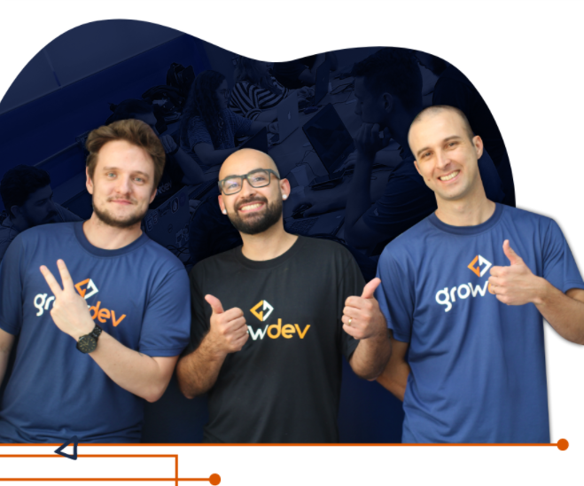

Formação completa em Desenvolvimento Web Full Stack
O que é o Programa Starter?
O Programa Starter é um curso? Não! Te decepcionei? Calma que vou te explicar e te mostrar que é
muito mais do que isso!
O Programa Starter, além de uma formação completa em Desenvolvimento Web Full
Stack, com metodologia de ensino e tecnologias direcionadas para o que as empresas demandam, tem o principal objetivo de
preparar e apoiar a sua inserção no mercado de trabalho.

O que eu vou aprender no programa?
A estrutura, metodologia e tecnologias utilizadas no Programa Starter foram pensadas para preparar
você para ingressar no mercado de trabalho como uma pessoa desenvolvedora web Full Stack, uma das
principais demandas do mercado. Aqui você aprenderá tecnologias utilizadas por empresas como Uber,
Facebook e Netflix.
Nossa metodologia é baseada no modelo iterativo e incremental. Mas o que é isso? É um modelo muito
utilizado para desenvolver software, onde, basicamente, acontecem ciclos (iterações) que passam por
todas as etapas da engenharia de software e ao final é gerado um incremento de produto, ou seja, o
software vai evoluindo de forma incremental. Da mesma forma, vamos incrementando o seu conhecimento,
através de ciclos, onde, agregamos um novo conhecimento e consolidamos os anteriores.

Principais tecnologias
Bacana né? E sabe por que o Programa Starter possui um ALTO GRAU DE EMPREGABILIDADE?
SETOR EXCLUSIVO FOCADO NA EMPREGABILIDADE
A nossa área de empregabilidade trabalha exclusivamente para os growdevers com o propósito de acelerar a entrada dos nossos profissionais em formação no mercado de trabalho.
CONEXÃO COM EMPRESAS
Desde o processo seletivo buscamos conhecer a sua história, entender seus objetivos, interesses e as suas soft skills. Isso nos ajudará a orientar você ao longo da formação, assim estaremos periodicamente atualizando suas informações e te acompanhando nesse processo.
CONEXÃO COM PROFISSIONAIS DO MERCADO
Periodicamente, convidamos profissionais que são referências na área de tecnologia para darem palestras exclusivas aos growdevers, contando sua trajetória e compartilhando experiências reais de quem já atua na área.